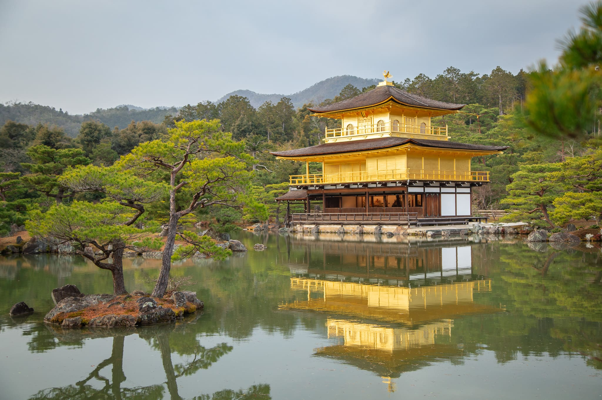
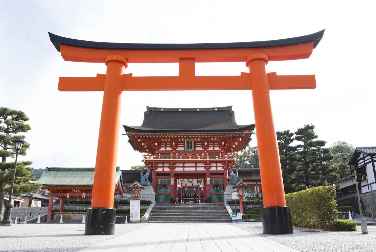
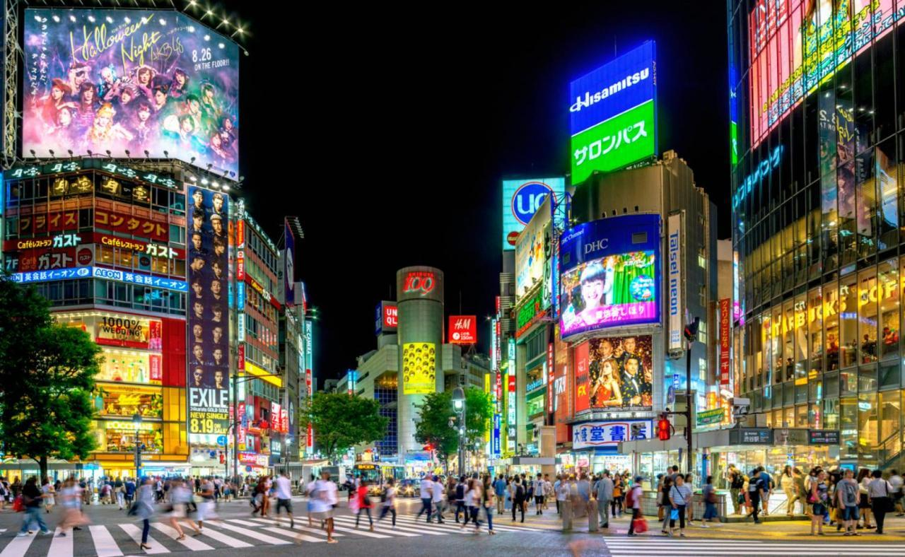
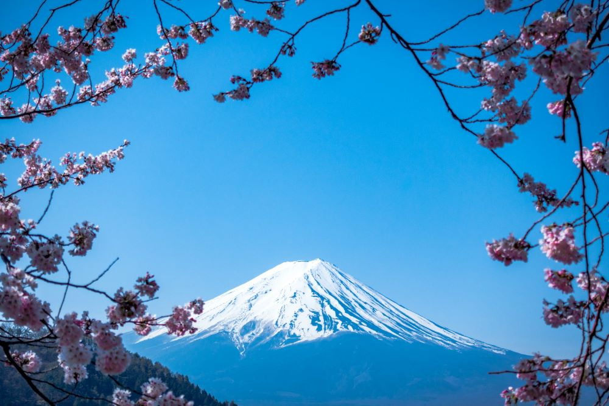
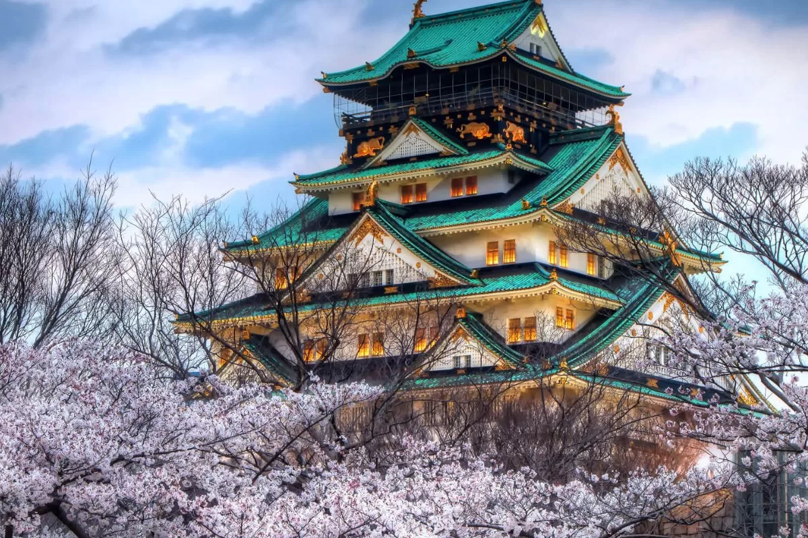
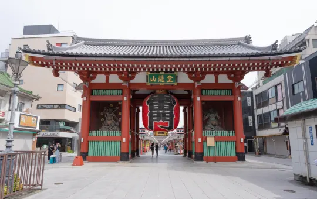
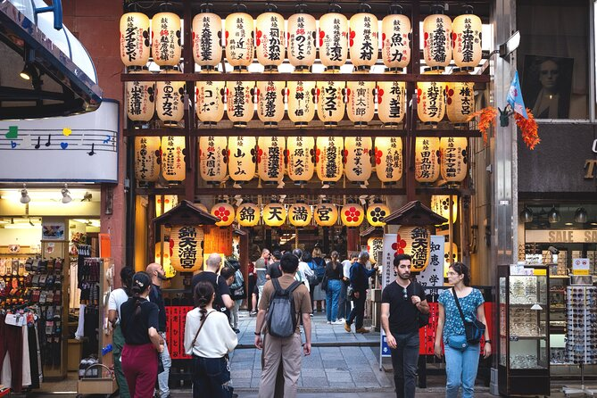

Pontos Turísticos
O Japão é um país de contrastes fascinantes, onde uma tradição milenar se encontra com uma modernidade vibrante. Seus pontos turísticos refletem essa dualidade única, oferecendo experiências inesquecíveis.
08 Pontos Turísticos📍
Templo Kinkakuji (金閣寺)
Como um renomado templo zen-budista com séculos de história, o Templo Rokuonji é mais conhecido hoje como Templo Kinkakuji – um nome derivado do famoso Pavilhão Dourado (salão de relicários) que serve como o ponto principal do terreno do templo. Este pavilhão de três níveis, coberto de folhas de ouro, é uma das estruturas históricas mais famosas e peculiares de Quioto. Agora um Patrimônio Mundial da UNESCO, o templo é considerado um destino imperdível pelos visitantes da cidade verdejante.
Santuário Fushimi Inari Taisha (伏見稲荷大社)

Dedicado à Inari, a divindade da boa colheita e sucesso nos negócios, Fushimi Inari Taisha é o chefe de todos os santuários Inari no Japão. O corredor aparentemente interminável de portais torii alaranjados vibrantes que ladeiam o caminho até o Monte Inari constitui um cenário impressionante e uma das imagens mais famosas do Japão.
Há cinco divindades, ou kami, adoradas em Fushimi Inari Taisha. Mais de 30.000 santuários em todo o Japão são dedicados às divindades Inari. Elas estão consagrados nas instalações de empresas, em coberturas de prédio e, às vezes, em propriedades particulares. Fushimi Inari Taisha é tanto um santuário do povo quanto da Corte Imperial, e, no passado, imperadores frequentemente faziam doações aqui.
Cruzamento de Shibuya (渋谷スクランブル交差点)
O Cruzamento de Shibuya é uma das atrações mais reconhecidas de Tóquio, fotografada em inúmeros filmes, revistas e blogs. Durante os horários mais movimentados, cerca de 1.000 a 2.500 pessoas seguem seu caminho por este cruzamento a cada dois minutos, o suficiente para encher rapidamente um estádio de futebol. O fenômeno deu origem ao seu apelido de "scramble" (confusão), uma vez que os pedestres atravessam em todas as direções. O Cruzamento de Shibuya está entre o caos maníaco e a sincronização perfeita. Seus passeios por Tóquio acabarão por trazê-lo aqui para atravessar o cruzamento e aproveitar a riqueza de opções de compras, restaurantes e entretenimento de Shibuya.
Monte Fuji (富士登山)

A 3.776 metros, o Monte Fuji é o pico mais alto do Japão, resultado da atividade vulcânica que iniciou há aproximadamente cem mil anos. Atualmente, o Monte Fuji e seu entorno são um destino recreativo popular para caminhar, acampar e relaxar.
Um dos símbolos mais emblemáticos do país, viajantes de todo o mundo se dirigem às províncias de Shizuoka e Yamanashi para visitar essa montanha inspiradora. Para os japoneses, no entanto, o Monte Fuji há muito tempo é considerado um lugar de importância espiritual e uma fonte de inspiração artística.
Cerca de 200.000 a pessoas escalam o Monte Fuji todo verão. Subir até o cume é popular no momento do nascer do sol. As pessoas geralmente começam a escalada no dia anterior e passam a noite em um alojamento na montanha. Depois, voltam a escalar cedo na manhã seguinte para ver o sol nascer no horizonte.
Castelo de Osaka (大阪城)

O Castelo de Osaka é, sem dúvida, o marco mais proeminente de Osaka e é testemunha das sangrentas lutas de poder que levaram à fundação da era Edo, em 1603. Enquanto sua história data de 1583, a sua principal torre, que é o ícone do castelo, só foi reconstruída em 1931.
Hoje, o museu de história ao lado do castelo documenta sua rica história, enquanto o parque e o espaço verde nos arredores são perfeitos para correr, andar de bicicleta e relaxar.
Santuário Meiji-jingu (明治神宮)

Cercado por uma exuberante floresta verde bem no coração de Tóquio , este santuário xintoísta é dedicado ao imperador Meiji (1852-1912) e à Imperatriz Shoken, que levaram o Japão a se tornar uma nação moderna.
Meiji Jingu deve ser uma prioridade entre seus primeiros passeios em Tóquio, já que qualquer passeio à movimentada área de Shibuya ou Harajuku combina bem com uma caminhada tranquila pelos caminhos bem-marcados até o santuário principal. principal.
Praia de Yonaha Maehama (与那覇前浜ビーチ)

A ilha relativamente pouco conhecida de Miyakojima em Okinawa abriga a praia de Yonaha Maehama, um trecho perfeitamente preservado de sete quilômetros de costa classificado entre as melhores praias arenosas do Japão.
Esta praia digna de cartão postal possui guarda-sóis e cadeiras disponíveis para passar um dia livre e planejar seus próximos passeios em Okinawa . Há também jet skis e banana boats para aluguel, além de chuveiros e instalações sanitárias nas proximidades.
Mercado de Nishiki (錦市場)

Hoje em dia, o Mercado de Nishiki é muito diferente de suas origens como um mercado de peixe ao ar livre, há cerca de 400 anos atrás.
O Mercado de Nishiki conta com 130 vendedores agrupados em uma passagem estreita de aproximadamente 400 metros de comprimento e 3,9 metros de largura. Ele continua se desenvolvendo, atraindo não só visitantes, mas também moradores de Quioto.
GabiHebi蛇